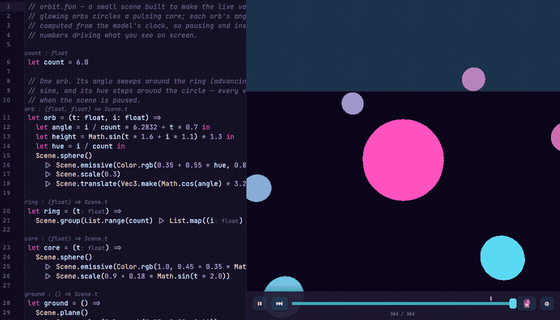
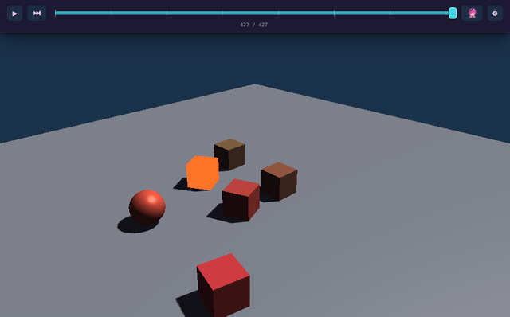
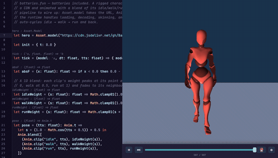
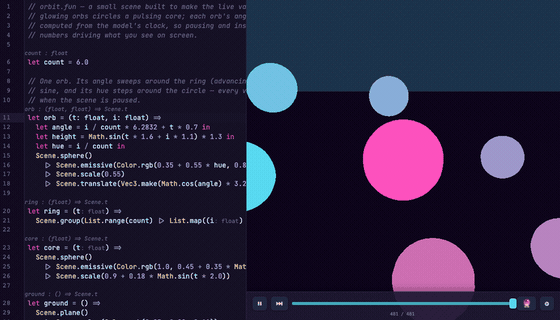
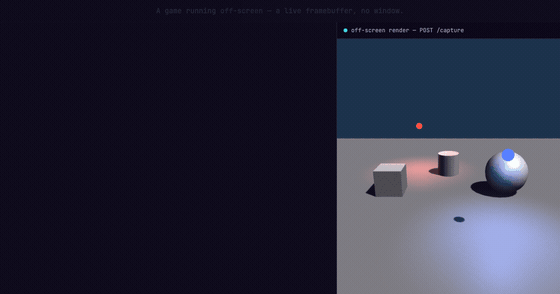

Instant Feedback
Edit your game while it runs. The runtime swaps your code under the live model — no rebuild, no restart, no losing your place.
Game development from an alternate timeline.
A free, open-source 3D game engine.
Put the fun in functional programming.

Edit your game while it runs. The runtime swaps your code under the live model — no rebuild, no restart, no losing your place.

Rewind while editing, make changes, or extrapolate forward to see how your edits ripple through gameplay.

Asset management, networking, physics, and spatial audio — in the box, ready to use.

Analyze the live values coursing through your game at any moment — nothing is hidden behind opaque binary state.

Games run and respond headlessly, so your favorite coding agent can build right alongside you.
Functor is a functional language built for game development, inspired by Elm and F#. Pure functions, interpreted, no compilation. Functor lives in a Rust runtime that does the heavy lifting — graphics and physics.
Windows · macOS
WebAssembly · no install
Meta Quest
Nothing to install — try in the browser now.
▶ Open the sandbox